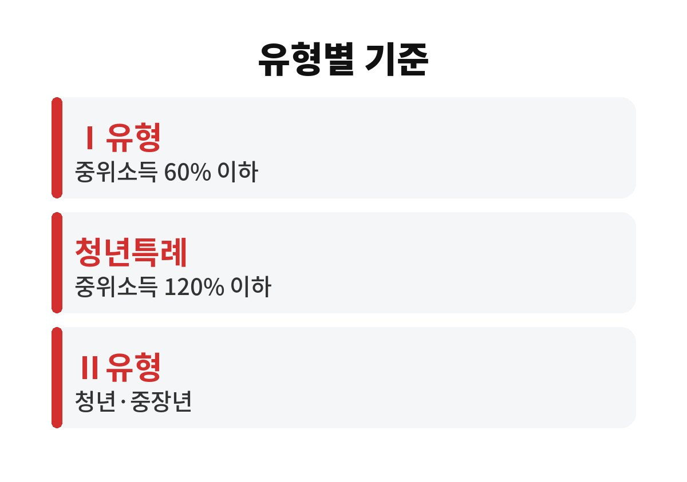
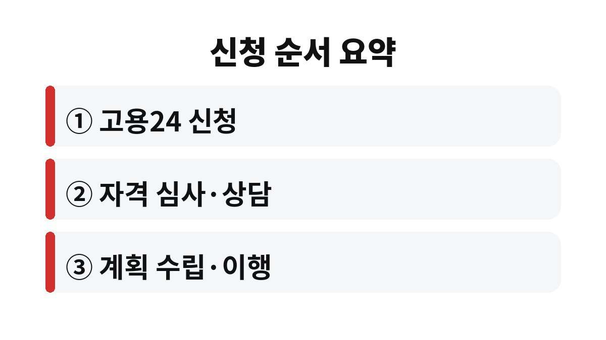

국민취업지원제도 구직촉진수당은 월 60만 원씩 6개월을 받는 Ⅰ유형과 취업활동비용 중심의 Ⅱ유형으로 갈리고, 어느 쪽에 해당하는지는 나이·소득·재산·최근 2년의 취업경험이 정한다.
2026년 11월 기준으로 공개된 안내를 바탕으로 유형별 자격을 한 표에 모았다.
실업급여와는 따로 움직이는 제도라서 고용보험 가입 이력만 보고 대상 여부를 짐작하면 어긋나는 일이 생긴다.
구직촉진수당은 Ⅰ유형에만 붙는 수당이다.
Ⅱ유형은 수당 대신 취업활동비용을 지원하는 구조여서, 같은 제도 안에서도 받는 돈의 성격이 다르다.
그래서 신청 전에 내가 어느 칸에 들어가는지를 먼저 확인해야 한다.
표의 수치는 공개된 안내를 옮긴 것이고, 가구원 수에 따른 중위소득 금액은 해마다 달라지므로 공식 공고의 최신 표로 다시 대조해야 한다.
재산은 본인만이 아니라 가구원 합산으로 보는 점이 가장 자주 어긋나는 부분이다.
| 구분 | 대상 연령 | 소득 기준 | 재산·취업경험 |
|---|---|---|---|
| Ⅰ유형 요건심사형 | 15~69세 | 중위소득 60% 이하 | 재산 4억 원 이하(청년 5억 원), 최근 2년 안에 100일 또는 800시간 이상 일한 경험 |
| Ⅰ유형 선발형(청년특례) | 15~34세 | 중위소득 120% 이하 | 재산 5억 원 이하 |
| Ⅱ유형 청년 | 15~34세 | 제한 없음 | 제한 없음 |
| Ⅱ유형 중장년 | 35~69세 | 중위소득 100퍼센트 이하 | 재산·취업경험 제한 없음 |

일한 기간이 100일 또는 800시간에 못 미치면 Ⅰ유형 요건심사형에서는 빠진다.
이때는 선발형이나 Ⅱ유형으로 길이 열리는지를 따로 본다.
선발형은 예산 상황에 따라 모두 뽑히지 않을 수 있다고 안내되어 있어서, 신청했다고 자동으로 되는 구조는 아니다.
15~34세라면 중위소득 120% 이하까지 청년특례로 볼 수 있다.
청년 나이는 병역을 마친 기간이 반영되어 최대 37세까지 인정될 수 있다고 적혀 있다.
병역 이력이 있다면 이 부분이 당락을 바꾸는 칸이어서 따로 확인해 둘 만하다.
35~69세 중장년은 Ⅱ유형에서 중위소득 100퍼센트 이하가 기준이다.
재산과 취업경험은 묻지 않는 점이 Ⅰ유형과 다르다.
다만 이 경우 월 60만 원 수당이 아니라 취업활동비용 위주라는 점은 미리 알아 둬야 한다.
수당은 등록만 한다고 나오지 않는다.
신청 화면에서는 가구원 정보, 소득·재산 정보, 취업경험, 병역사항을 입력하는 칸이 이어진다.
병역사항 칸은 청년 나이 계산에 쓰이므로 비워 두지 않는다.
취업활동계획을 세우고 그대로 이행해야 계속 지급된다.

예를 들어 퇴사한 지 얼마 되지 않은 구직자가 실업급여 대상이 아니어서 막막한 경우를 떠올려 보면 된다.
이때 고용보험 이력이 짧아도 이 제도는 별도 기준으로 심사하기 때문에, 위 표의 칸을 하나씩 대 보는 것이 순서다.
반대로 실업급여를 받을 수 있는 사람이 굳이 이 제도를 먼저 신청할 이유는 크지 않다는 점도 짚어 둔다.
두 제도의 지원 성격이 다르므로 내 상황에 맞는 쪽을 골라야 한다.
가구원 정보와 재산 정보를 내야 해서 서류보다 가구 구성을 먼저 정리해 두면 심사 단계가 빨라진다.
계획을 중간에 이행하지 않거나 요건이 바뀌면 지급이 제한될 수 있다.
구체적인 감액 기준과 제한 사유는 공식 공고에 나와 있으니 신청 직전에 한 번 더 읽는다.
궁금한 점은 고용노동부 고객상담센터 1350으로 물으면 가장 빠르다.
※ 2026년 11월 기준 공개된 정보를 정리한 글이며, 정확한 대상 요건·금액·신청 기간은 복지로·정부24·관할 주민센터의 공식 공고를 확인하길 바란다.